Philip
Johnson
Collaborative Software Development
Laboratory
University of Hawaii
$Id: README.html,v 1.18 2001/07/26 19:26:58 cvs Exp $
[Note: This technical report contains a recent snapshot of the Hackystat Installation Guide. Please use the README.html file included in your hackystat distribution for the most recent and accurate installation instructions for your particular release.]
Welcome to the installation guide for Hackystat. Hackystat is designed to explore the mechanisms required for (and implications of) fully automated software developer data collection and analysis. For more information on the goals of Hackystat, see the Hackystat Research Page.
For most Hackystat users, the answer is no. If you simply want to install Hackystat sensors in order to collect and analyze your software engineering data, and if there is a Hackystat server available for your use, then what you should do instead of reading these instructions is:
Open your browser and go to the home page of the Hackystat server. (CSDL maintains a public hackystat server; contact Philip Johnson for the URL.)
Follow the links on the server home page to the installation instructions for the sensors you wish to install.
Install the sensors.
Restart your tools, and Hackystat will begin collecting and analyzing your data.
If, on the other hand, you are interested in installing your own Hackystat server, and/or doing development on the Hackystat code base, then read on.
Hackystat is distributed in three flavors:
A "binary" distribution. This
distribution provides just enough files to get the server up and running. Once
you have the server running, you can download and install the sensor
code from the server. Binary distributions are distributed as .zip
files, such as hackystat-pota-bin.zip.
The top-level directory will be named with a label indicating the
release name, such as "hackystat-pota" (for the Planet of the
Apes release).
A "source snapshot" distribution.
This distribution provides the binary distribution plus all of the source files and allows
you to recompile and rebuild. Source snapshot distributions are also distributed
as .zip files, such as hackystat-pota-src.zip,
and the top-level directory includes the release label. Normally, the only reason to download the
source distribution
is to evaluate the system and decide whether you want to become a
developer. If so, you'll want to discard the source distribution
and download the developer distribution.
A "developer" distribution. This distribution enables you to participate in the actual development of the system. You need to have CVS installed and obtain the CVS password to the Hackystat repository. The top-level directory for CVS distributions is called "hackystat" regardless of the release currently being worked on.
| Directory/File | Available in | Contents |
|---|---|---|
| hackystat/ | dev, src, bin | Contains this document and various "build" files used to compile and package the system. |
| hackystat/LICENSE.txt | dev, src, bin | Hackystat is distributed under the terms of the GNU public license. |
| hackystat/build/ | dev, src | Subdirectory that is created by the Ant build process containing the executables and jar file. (Not present until you run the build script for the first time.) |
| hackystat/api | dev, src | Subdirectory containing the JavaDoc-generated design documentation for the system. |
| hackystat/bin/ | dev, src, bin | Subdirectory containing various scripts to invoke the hackystat tools. |
| hackystat/descriptors/ | dev, src, bin | Subdirectory containing the XML descriptors for each notification type that are deployed onto the server at server installation time. |
| hackystat/webapps/ | dev, src, bin | Subdirectory containing various files and subdirectories required by SOAP, Cocoon, and Hackystat. They will be copied into the Tomcat webapps directory as part of the installation process. |
| hackystat/lib/ | dev, src, bin | Subdirectory containing various jar files for development and use of Hackystat. |
| hackystat/src/ | dev, src | Subdirectory containing the sources for the system. |
This build system is based on Jakarta Ant. Ant uses a build file written in XML (build.xml) as building instructions. For more information refer to http://jakarta.apache.org/ant/.
Hackystat installation involves the following general steps:
The following directions require several environment variables to be set. Procedures for setting environment variables differ widely across Windows and Unix platforms, and these instructions assume you know how to set environment variables on the platform you are using. The screenshots are generated from an installation on Windows2000, but Hackystat has also been successfully installed on other Windows and Unix platforms including Windows98, Windows/NT, Solaris 7, and RedHat Linux.
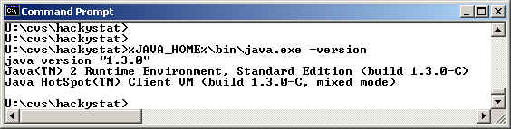
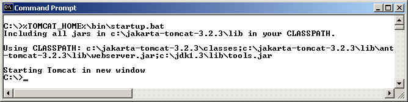
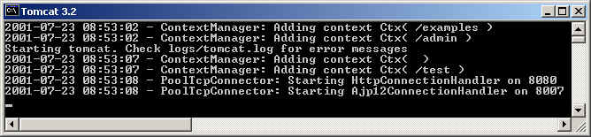
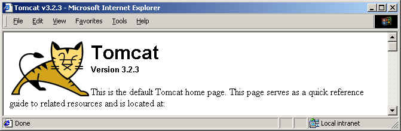
Note that the current hackystat installation process assumes that this Tomcat installation will be dedicated to Hackystat. If you are using Tomcat elsewhere in your environment, it is safest to download a fresh copy that is used just for Hackystat
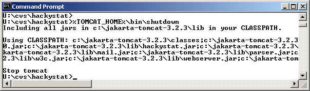
| Env variable (upper case required) | Example value (set to values appropriate for your installation) |
| HACKYSTAT_HOST | http://localhost:8080/ (note the trailing slash is required) |
| HACKYSTAT_HOME | c:\hackystat (note that NO trailing slash is required) |
| HACKYSTAT_MAIL_SERVER | smtp-server.hawaii.edu |
| HACKYSTAT_ADMIN_EMAIL | johnson@hawaii.edu |
| TOMCAT_OPTS | -Dhackystat_host=http://localhost:8080/ -Dhackystat_mail_server=smtp-server.hawaii.edu -Dhackystat_admin_email=johnson@hawaii.edu |
Note that these "-D" arguments should all be on one line although they may not appear that way in these installation notes.
There are two other environment variables used by Hackystat that you do not need to set for a basic installation of the server. The HACKYSTAT_USER_EMAIL environment email is used by some sensors to determine the user that data is being collected for. The JBUILDER_HOME environment variable is needed to recompile the JBuilder sensor code.
Whether or not you do this step depends upon the distribution you obtained. The binary distribution includes the hackystat.jar file in the lib directory, so you do not need to build hackystat.jar. Moreover, since it does not include source, you cannot build hackystat.jar. The source distribution includes the hackystat.jar file in the lib directory, and does include source, so this step is optional and you can skip it if you like. In fact, skipping it is strongly recommended unless you are able to recompile all of the sensor code. The developer distribution does not include hackystat.jar and so this step is required.
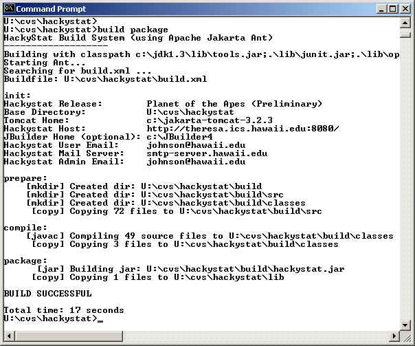
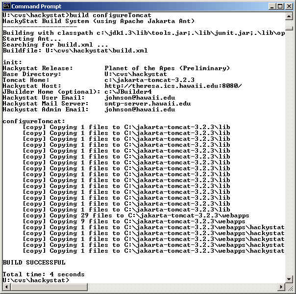
<Context path="/apache-soap"
docBase="webapps/soap"
debug="1"
reloadable="false">
</Context>
<Context path="/cocoon"
docBase="webapps/cocoon"
debug="0"
reloadable="false" >
</Context>
<Context path="/hackystat"
docBase="webapps/hackystat"
debug="0"
reloadable="false" >
</Context>
<RequestInterceptor className="org.apache.tomcat.request.StaticInterceptor" debug="0" suppress="true" />
<Connector className="org.apache.tomcat.service.PoolTcpConnector">
<Parameter name="handler"
value="org.apache.tomcat.service.http.HttpConnectionHandler"/>
<Parameter name="port"
value="8080"/>
</Connector>
Remember to also change the port value in HACKYSTAT_HOST and TOMCAT_OPTS!
To test your Tomcat configuration, invoke the TOMCAT_HOME\bin\startup script again, and check to make sure that no message appears concerning the use of a "static" classpath. If so, you need to edit the tomcat.bat file to set the CLASSPATH correctly. Otherwise, you should see all of the files you copied into the lib directory in the tomcat classpath. Here's what the command prompt window and the tomcat output should look like after configuration:
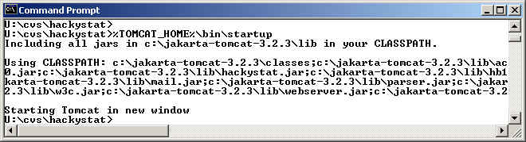
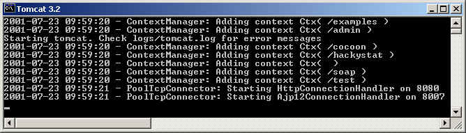
If everything is OK so far, then tomcat should now be running. Try retrieving the following pages to check the configuration and make sure that Tomcat, Soap and Cocoon are available (substituting your own host address for localhost:8080 if necessary):
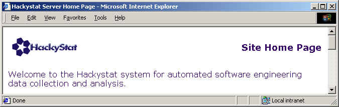
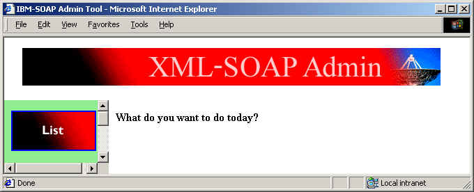
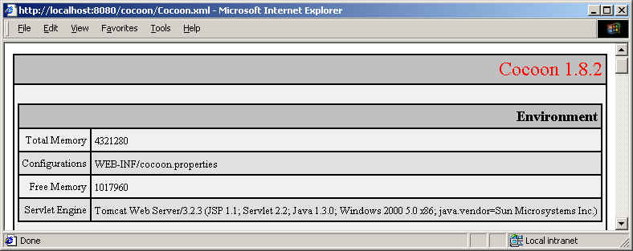
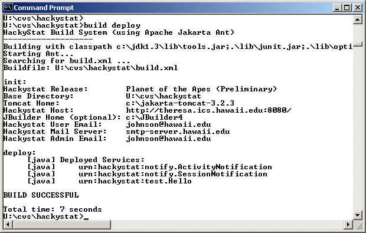
This command will deploy the Hackystat services, then list them out. If you get an "unsupported response content type" error, see the FAQ below.To finish verifying your installation, you should run the Hackystat JUnit test suite. Invoke: build testInstall.
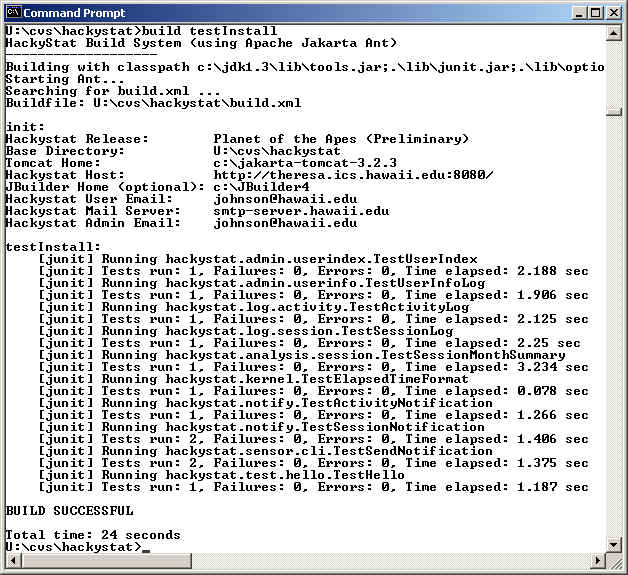
Do not be misled by the "BUILD SUCCESSFUL" notification: that does not mean the tests all passed successfully. You need to make sure that "Failures: 0" appears for each test case as in the example screen dump above.
If all the tests passed successfully, congratulations! You have successfully installed the Hackystat server.
In order to actually collect and analyze software engineering data, you must now install one or more Hackystat sensors. To do this, you go to the home page for the server you've just installed and follow the links to the sensor installation page of choice:
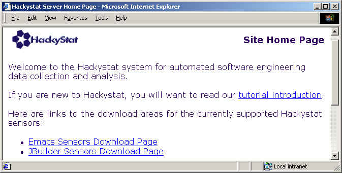
SimpleTimer is a simple application designed to show how data can be sent to a Hackystat server. Unlike real sensors, which are downloaded from the server and which send data automatically, SimpleTimer is an application that is included with the server distribution only and which requires the user to manually send time data. Try the following once you have the hackystat server up and running:
| Env variable (upper case required) | Example value (set to values appropriate for your installation) |
| HACKYSTAT_HOST | http://localhost:8080/ (note the trailing slash is required) |
| HACKYSTAT_HOME | u:\cvs\hackystat |
| HACKYSTAT_USER_EMAIL | johnson@hawaii.edu |
| JAVA_HOME | c:\jdk1.3 |
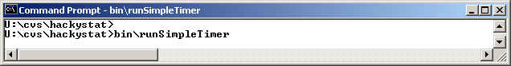
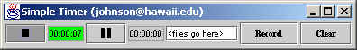
| Package | Release | Jar file(s) | Comments |
|---|---|---|---|
| Java* | 1.3 | Install separately, define JAVA_HOME. | |
| Tomcat* | 3.2.3 | Install separately, define TOMCAT_HOME. | |
| Ant | 1.2 | lib/ant.jar lib/jaxp.jar lib/parser.jar | Needed to build hackystat. |
| Soap | 2.1 | lib/soap.jar | Requires xml4j, xerces, JavaMail, JAF. |
| XML4J | 3.1.1 | lib/xml4j.jar | Needed by Soap. |
| Xerces | 1.2.3 | lib/apache_xerces | An XML parser is required by Tomcat, SOAP, and Cocoon. This version of xerces appears to work with all three of these tools. Several issues: (1) Soap 2.1 breaks on Xerces 3.2.1 so an older release is recommended. (2) xerces.jar must go early in the tomcat path before any other XML parser, so I renamed it to apache_xerces so that tomcat's auto-classpath constructor will find it early. (3) Cocoon 1.8.2 requires Xerces 1.2. |
| JavaMail | 1.2 | lib/mail.jar | Needed by Soap (and hackystat) |
| Java Activation Framework | 1.0.1 | lib/activation.jar | Needed by JavaMail. |
| JUnit | 3.2 | lib/junit.jar lib/optional.jar | Needed by hackystat for testing. Optional.jar needed for junit taskdef. |
| HttpUnit | 1.2 | lib/httpunit.jar lib/Tidy.jar | Needed by hackystat for testing. Provides a mechanism for retrieving and testing web pages. |
| printf | 1.5 | lib/hb15.jar | Used to format elapsed time in the SimpleTimer tool. Note that the printf site distributes this as hb15.zip. I rename that file to hb15.jar in this distribution, so that the Tomcat autoclasspath mechanism can find it. (Jar files are in Zip format, so there's no real difference.) |
| jdom | beta 6 | lib/jdom.jar lib/sax2.jar | Used to create/manipulate XML representations of data in hackystat. |
| jato | beta3-ea4 | lib/jato-b3-ea4.jar | Used for translation between native Java and XML data representations. |
| Cocoon | 1.8.2 | lib/fop_0_15_0.jar lib/turbine-pool.jar lib/w3c.jar lib/xalan_1_2_D02.jar lib/cocoon.jar (lib/apache_xerces.jar) | Used to serve XML pages from within Hackystat. (apache_xerces is also required but it's listed above.) |
In other words, you need to download and install Java and Tomcat, but everything else is included in the lib directory of the Hackystat distribution. Note that the world is in flux, and it is possible that a new release of Java or Tomcat may be incompatible with the versions of the other tools that are provided with this distribution. Please contact us if you appear to encounter compatibility problems.
Here are some useful online resources related to Hackystat and its dependent technologies:
[SOAPException: faultCode=SOAP-ENV:Protocol; msg=Unsupported response content type "text/html; charset=ISO8859-1", must be: "text/xml". (more stuff follows)This message typically occurs when the server can't be found, and most likely indicates that your HACKYSTAT_HOST value is incorrect. Make sure, for example, that it includes the "8080" port number if you're running on the default Tomcat port.
Out of environment spaceThis is an infamous Windows "bug". To fix it on Windows 95/98, you need to edit your config.sys file and add the following line:
shell=C:\command.com /e:4096 /p(Or whatever the path is to command.com on your system.)
Publishing Engine could not be initialized.This is probably due to apache_xerces.jar not being first in the tomcat classpath, or parser.jar coming before apache_xerces.jar in the Tomcat classpath. One potential way to fix this is to change the line
SET CP=%CP%;%CLASSPATH%into
SET CP=%CLASSPATH%;%CP%Other approaches can work as long as they result in the classpath including all the .jar files in tomcat/lib and their being listed in alphabetical order. This happens by default when Tomcat succeeds in building the classpath automatically.